A concrete dipping vat found during the environmental review of Ladera Ranch would not have been recorded as a dipping vat. It would have been recorded as something else. This report builds the vocabulary of what that something else would be, sweeps 470 pages of the obtained environmental record against it, and follows the trail to the document, the mandated report series, and the physical repository where such a record would actually sit.
This project has already searched the obtained environmental documents for dip vat, cattle dip, sheep dip and dipping, and found nothing. That search assumed the searcher and the original recorder shared a vocabulary. They did not. In 1997 a surveyor walking ranch land who encountered a half-buried concrete trough with iron pipe rails had no reason to know what a 1911 arsenical dipping station looked like. That person still had to write something down. This report asks what they wrote.
A 26-foot concrete trough, 6.5 feet deep, with a sloped entry, a drip apron, iron pipe rails and timber corral posts, sitting derelict in brush. Seven different professionals would write seven different things.
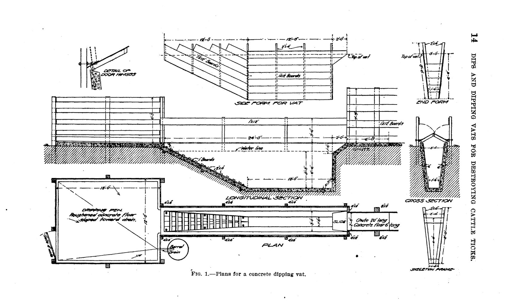
| Term | Why a 1911 vat would be written this way | Register |
|---|---|---|
| stock watering trough / stock pond | The single most probable misidentification. It is a concrete trough, on a drainage, where cattle demonstrably gathered. A surveyor would not be wrong in outline, only in chemistry. | C |
| cistern / concrete tank | A deep, rectangular, lined concrete vessel in ground with no plumbing attached reads as water storage to anyone who has not seen a dipping plan. | B, C |
| sump | The standard word for a sunken concrete box of unknown function. Also the word a Phase I consultant is trained to flag, which makes it the most valuable term in the list. | B, F |
| historic-period feature / ranching-related feature | Precisely how a CEQA archaeologist would record it on a DPR 523 form without assigning a function. | E |
| corral remnant / loading chute | The pens, chute and squeeze are the visible part; the vat is the part in the ground between them. Recording the corral and missing the vat is the expected outcome. | D |
| concrete structure of unknown function | The honest entry. If this phrase appears anywhere on Ladera ground, it is the highest-value lead in the project. | B |
| pits, ponds or lagoons | A verbatim ASTM E1527 questionnaire item. A vat is a pit. See Part C, finding 1. | F |
| existing improvements to be removed | How the feature disappears: not as contamination, but as a demolition line item on a grading plan. | G |
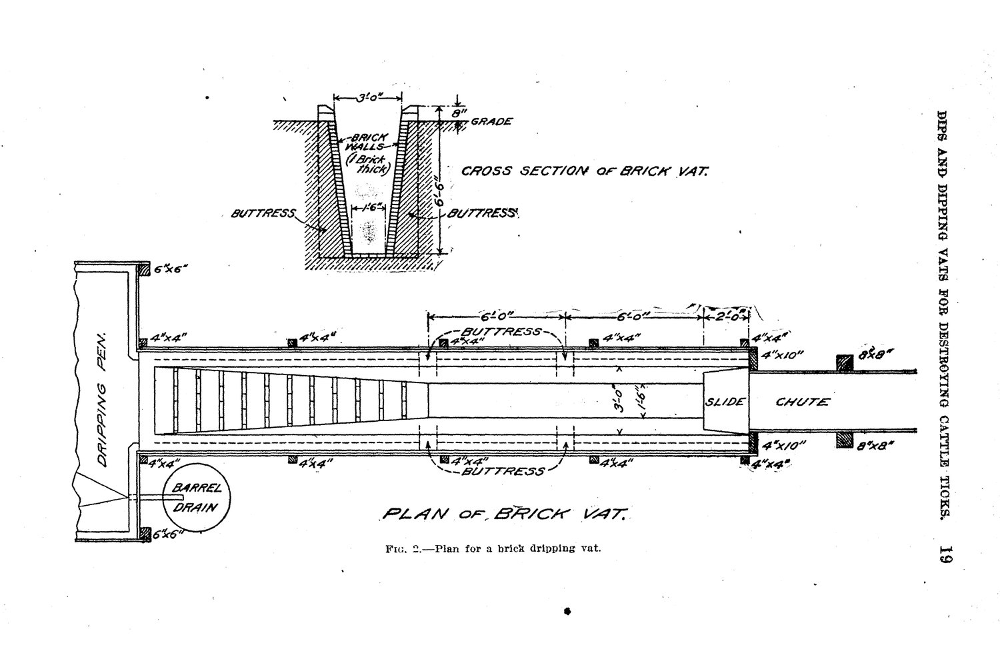
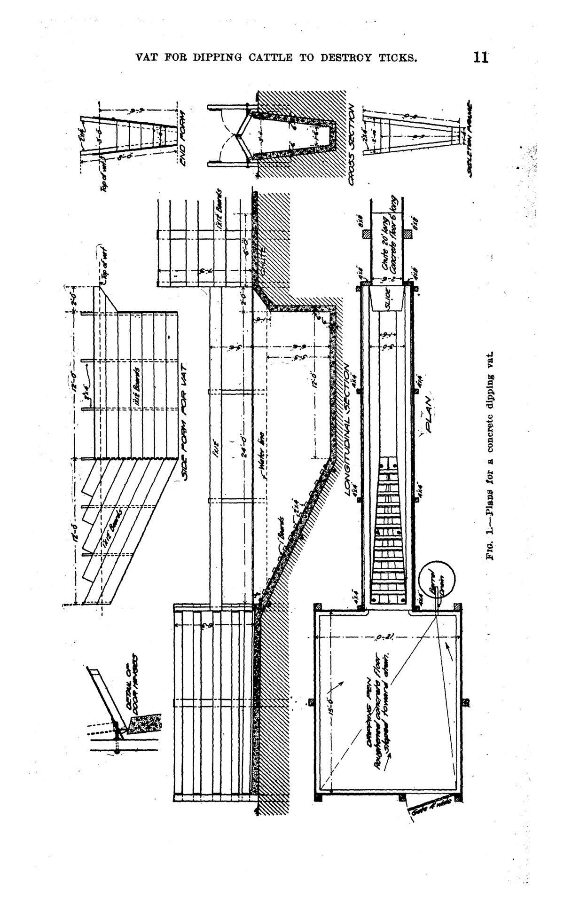
The complete 159-term list is published as LEXICON.md alongside this report, formatted for reuse against any document obtained in future.
All 159 terms were run against the full text of six environmental and entitlement documents: 470 pages, 956,237 characters. Matching was case-insensitive with flexible word separators, so concrete-lined and concrete lined both register.
| Document in the corpus | Pages | Digitisation | Coverage |
|---|---|---|---|
| EIR 589 Appendix I · Phase I ESA, Planning Areas 1–9 | 218 | Text layer Corel PDF Engine via a network print server, March 2004 | The Ranch Plan, east and south of Ladera |
| Ladera Planned Community Program Text 17 Oct 1995, revised 30 Jul 2003 | 136 | Image only. No text layer at all OCR performed for this report | Ladera Ranch itself — zoning, permitted uses, conditions of approval |
| Oso Grande Phase I ESA | 67 | Scanned, OCR 2011 | Adjacent parcel |
| Oso Grande Phase I Addendum | 43 | Scanned, OCR 2011 | Adjacent parcel |
| Oso Grande DTSC correspondence and addendum | 6 | Scanned, OCR 2011 | Adjacent parcel |
The 136-page Ladera Planned Community Program Text — the only Ladera-specific document in the set — returned 135 characters of text across 136 pages. It is a pure image scan with no text layer. Any keyword search ever run over this project's evidence folder passed straight through it and returned nothing, correctly and uselessly.
It was rendered at 200 dpi and run through optical character recognition for this report, producing 176,142 characters of searchable text. Everything in Parts D and E comes from those pages. This is the finding that makes the rest of the report possible, and it is worth generalising: before searching a document, confirm it has text to search.
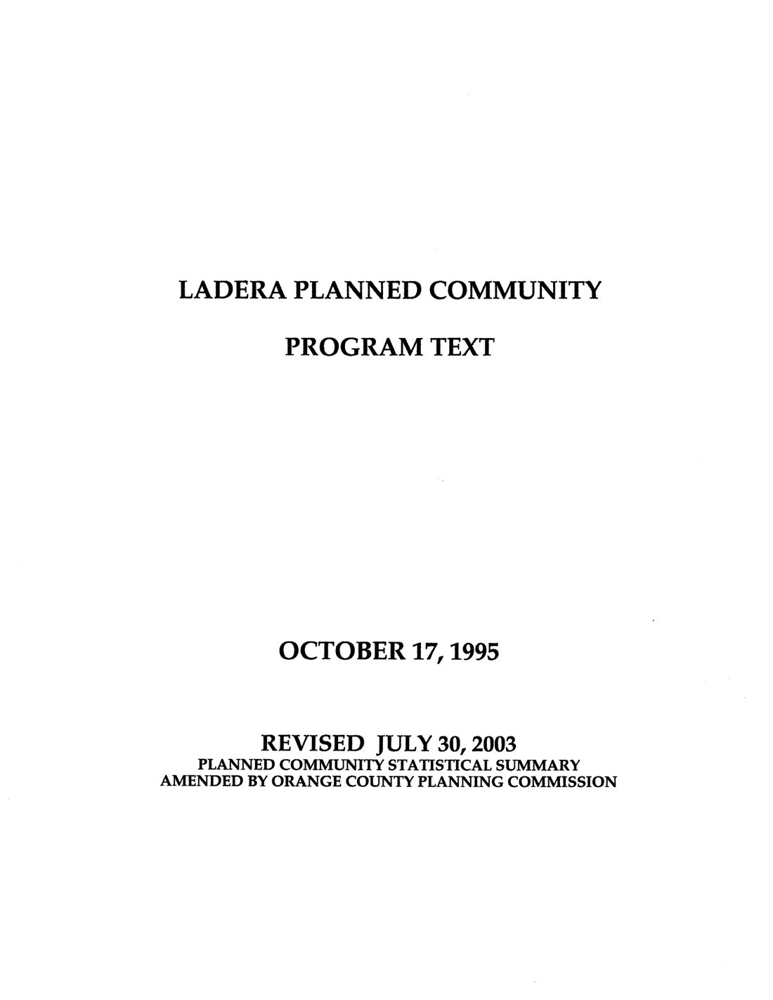
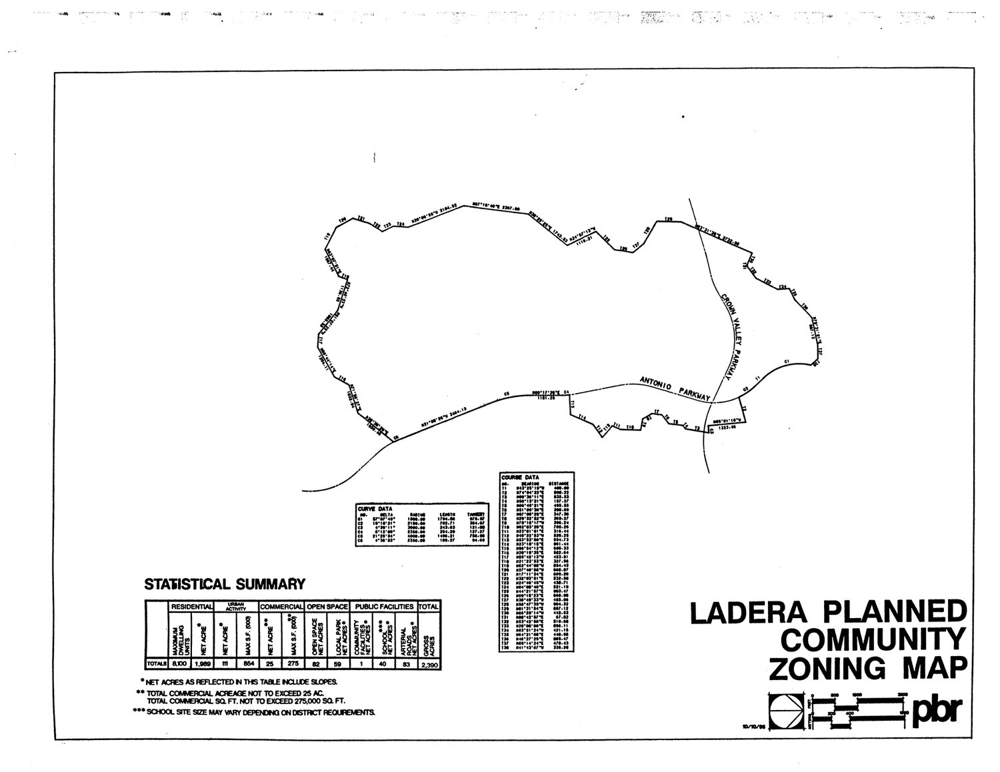
| Register | Present | Terms found, with occurrence counts |
|---|---|---|
| A. Correct names | 0 / 22 | No hits. Not one of dip vat, cattle dip, sheep dip, dipping tank, plunge vat, swim vat, tick eradication, fever tick, arsenic trioxide or sodium arsenite appears anywhere in 470 pages. |
| B. Generic concrete | 8 / 22 | unknown origin (9), concrete tank (6), concrete pad (3), concrete structure (2), concrete lined (2), concrete-lined (2), concrete slab (1), concrete vault (1) — all 26 in EIR 589 only |
| C. Water and agriculture | 4 / 29 | reservoir (19), sump (9), septic (3), cesspool (1) |
| D. Ranching features | 2 / 21 | corral (11), windmill (3) |
| E. Cultural resources | 1 / 22 | records search (19) — every instance refers to a regulatory database search, not a CHRIS archaeological records search |
| F. Phase I ESA | 6 / 26 | UST (139), underground storage tank (97), distressed vegetation (31), stained soil (24), drum (21), buried debris (1) |
| G. Grading and civil | 1 / 17 | demolition (6) |
One hit was discarded as a false positive. The term REC — in ASTM usage a Recognised Environmental Condition — matched twice in the Program Text, where both instances are the abbreviation for recreation in a land-use acreage table. It is excluded from the counts above.
Zero hits across all 22 correct names, in 470 pages covering a working cattle ranch and the community built on it. That is the expected result and it is worth stating cleanly: the absence of the term dip vat from these documents is not evidence that no vat existed. It is evidence that nobody was looking for one.
Every Planning Area Phase I in EIR 589 includes an identical owner questionnaire. One item reads, verbatim:
Q: "Are there currently, or to the best of your knowledge have there been previously, any pits, ponds, or lagoons located on the property in connection with waste treatment or waste disposal?"
This is the closest any standard instrument comes to asking about a dipping vat. A vat is a pit. The answer recorded in every planning area was "No."
Why that answer is unsurprising rather than suspicious. The question is scoped to waste treatment or waste disposal. A rancher in 2003 being asked about waste lagoons has no reason to think of a concrete trough his grandfather's generation filled with arsenic under federal order, decades before he was born, which by then was brush-covered ground. The instrument was answered honestly and it could not have surfaced this. The question failed, not the person answering it.
The same questionnaire block also asks about fill dirt "of an unknown origin." In Planning Area 1 the answer was yes: fill was imported for a lemon grove. Elsewhere, no.
Every hit on concrete tank, concrete vault, concrete-lined, concrete pad and concrete slab lands on one of two things: the TRW / Northrop Grumman Capistrano Test Site in Planning Area 8, or facilities along Ortega Highway. Examples: closure of the HEPTS concrete tank; a 500-gallon UST removed from a concrete vault; two concrete-lined containment sumps at the Drum Farm; a laser test pad.
On open ranch land, the recorded language is entirely different. Planning Area 9 is typical: "predominantly vacant, used for grazing and open space… No evidence of contamination, distressed vegetation, petroleum-hydrocarbon staining, waste drums…"
What this shows. The consultants had a precise vocabulary for concrete structures and used it whenever one was attached to an industrial facility. Walking grazing land they applied a different checklist: a petroleum and drum checklist. A derelict concrete trough in brush triggers no item on it. It is not stained. It is not a drum. It is not a tank with a fill pipe. It is invisible to the instrument being used.
Corrals appear eleven times. The Oaks Corral received its own dedicated Phase I ESA in July 2002. Windmills are noted individually along Verdugo Canyon and Talega Creek. Historic topographic map review notes "a small corral on the RJO property" from a 1974 sheet.
Why this cuts both ways. It shows the consultants did record ranching infrastructure, carefully, which is a point in their favour. It also sharpens the gap: what they recorded were active, visible, above-ground features — a working horse corral, a standing windmill, a structure legible on a topo sheet. A 1911 vat abandoned by 1912, its timber long rotted, its concrete floor at or below grade under ninety years of brush, is none of those things.
One open lead sits in this material. At Cow Camp, the report states an area "was historically used to bury old equipment and waste scraps," and recommends "that the exact location of the buried debris be identified." Whether that identification was ever performed is not in the documents held. It is a live question for a records request, though Cow Camp is on Ranch Plan land rather than in Ladera Ranch.
This report set out to find images in the environmental record. The most important thing it found about images is an absence, and the absence is documented in the record's own table of contents.
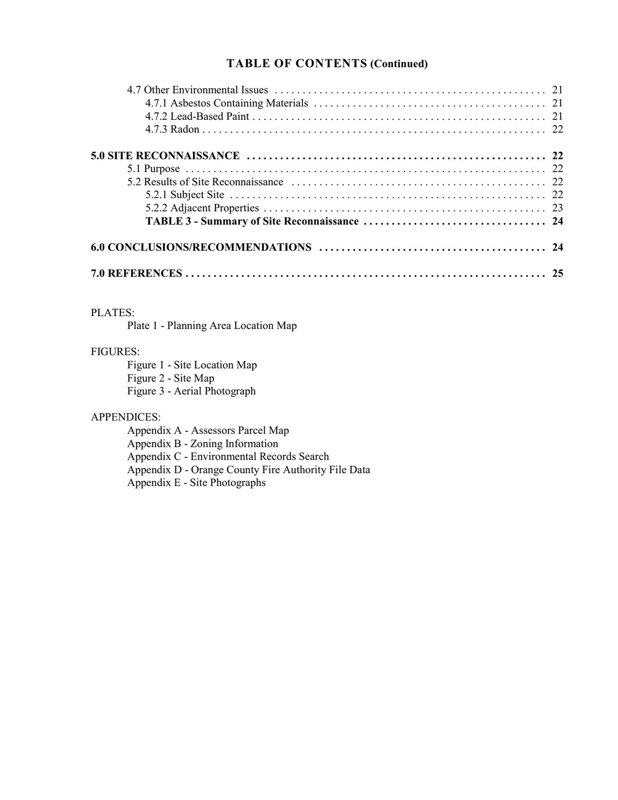
The 218-page file was examined object by object. It contains nine raster images in total, each 113 by 172 pixels, each in the same position at the head of a Planning Area section. They are the consultant's logo.
There is no Plate 1. There is no Figure 1, 2 or 3. There is no Appendix A, B, C, D or E. Every one of the nine Planning Area sections ends at "7.0 REFERENCES" and the next one begins. The document is nine report bodies with every map, every aerial photograph and every site photograph stripped out.
| Promised in all nine tables of contents | Present | What it would have shown |
|---|---|---|
| Plate 1 — Planning Area Location Map | No | Where each planning area sits, at a readable scale |
| Figure 1 — Site Location Map | No | The parcel in its regional setting |
| Figure 2 — Site Map | No | Features observed on the ground, plotted. The single most relevant missing item |
| Figure 3 — Aerial Photograph | No | A 2000 aerial of the parcel |
| Appendix A — Assessors Parcel Map | No | Parcel geometry |
| Appendix B — Zoning Information | No | Zoning at the time of survey |
| Appendix C — Environmental Records Search | No | The regulatory database results in full |
| Appendix D — Orange County Fire Authority File Data | No | OCFA hazardous-materials file contents |
| Appendix E — Site Photographs | No | Photographs taken by the consultant while walking the land. Exactly the material this investigation has been looking for |
It does not mean the photographs were destroyed or withheld. The metadata says this file was scanned on a network copier in March 2004 for distribution. Large-format plates and photo appendices are routinely left out of a scanned circulation copy because they do not feed through a sheet scanner. The likeliest explanation is mundane.
What it does mean is that the photographs exist by reference. A consultant walked this land, took photographs, and bound them into Appendix E of nine separate reports. That is a specific, named, datable body of images, and it is requestable. Until now this project did not know to ask for it.
And it means every conclusion drawn from this document is drawn from its text alone. Anything the consultant recorded as a mark on a site map rather than as a sentence is not in the version that has been read.
The historical review in each Planning Area states that aerial photographs "dating from 1952 to 1999 were reviewed at Continental Aerial Photo in Los Alamitos, California," with a 2002 frame from EDAW. That sentence appears fourteen times across the nine reports.
It names a commercial aerial photography archive that held frame-level coverage of this land, and it confirms the review window. The compulsory dipping era of 1907 to 1912 is four decades earlier than the earliest frame anyone looked at.
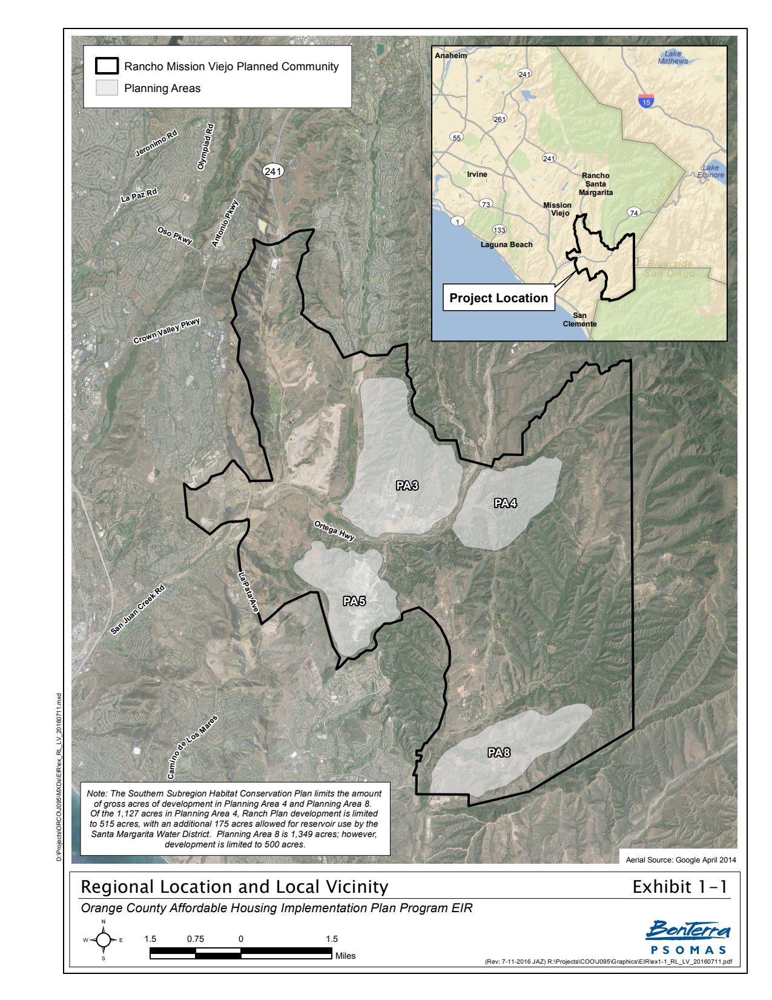
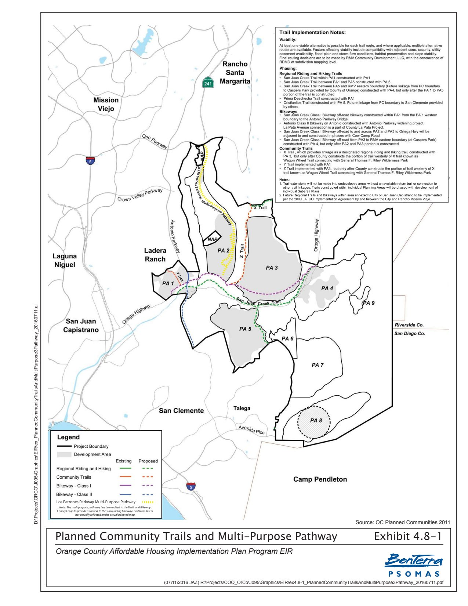
Every previous search in this project ran against the wrong environmental impact report. The correct one has now been identified by number, certifying body and date.
The Ladera Planned Community Program Text refers twice to EIR 555 — to "Exhibit 1-3 entitled 'Proposed General Plan Land Use Amendment,' of EIR 555," and to "sub-measures A through Q of Mitigation Measure 26 of EIR 555."
An Orange County Zoning Administrator minute for a project located in Ladera Ranch confirms the citation in official language: "Find that Final EIR 555, previously certified by the Board of Supervisors on 10/17/95 and Addendum PA970174 previously approved by the Planning Commission on 4/7/98 together are approved for PA 180010."
The Program Text's own title page is dated 17 October 1995 — the same day the Board certified EIR 555. The zoning document and the Program Text corroborate each other independently.
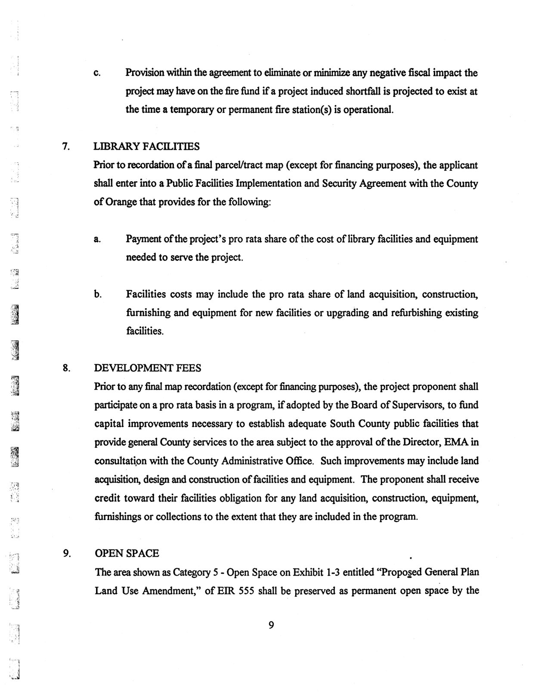
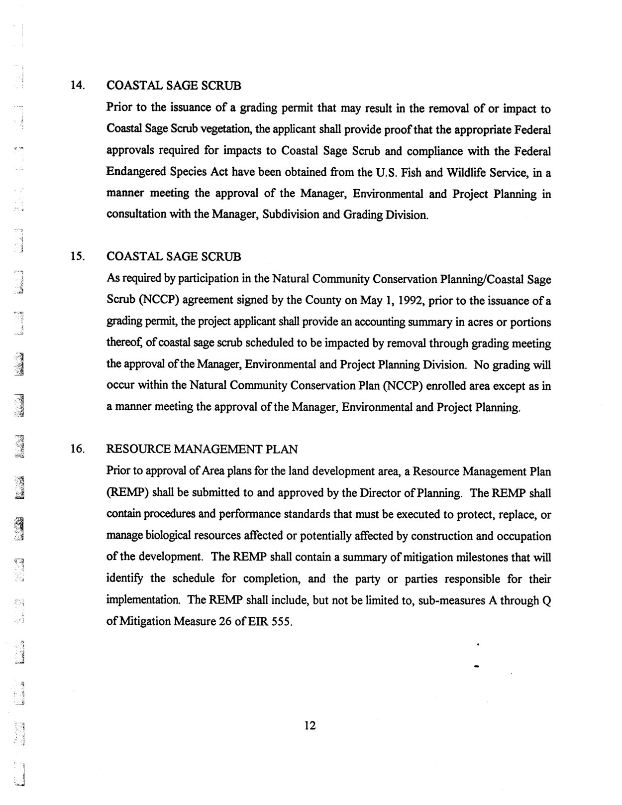
| Document | Covers | Status |
|---|---|---|
| Final EIR 555 + Addendum PA970174 certified 17 Oct 1995; addendum 7 Apr 1998 | Ladera Ranch — roughly 4,000 acres, about 1,600 preserved as open space | Not obtained. Now precisely identifiable and requestable. |
| EIR 589 Appendix I Phase I ESA 2003 | The Ranch Plan — roughly 22,815 acres east and south | Obtained and swept. Does not cover the Ladera footprint. |
| Ladera PC Program Text 1995, rev. 2003 | Ladera Ranch zoning and conditions of approval | Obtained, OCR'd and swept for this report. Names EIR 555 and its conditions, but contains no site reconnaissance. |
A reader could reasonably have assumed this project had searched "the Ladera EIR" and found nothing. It had not. It had searched the Ranch Plan EIR — a different application, a different footprint, approved years later.
Parts B and C therefore describe how the consulting profession wrote about this landscape. They do not describe what was recorded at the specific location in question, because until now the document that would say so could not be named. It can now.
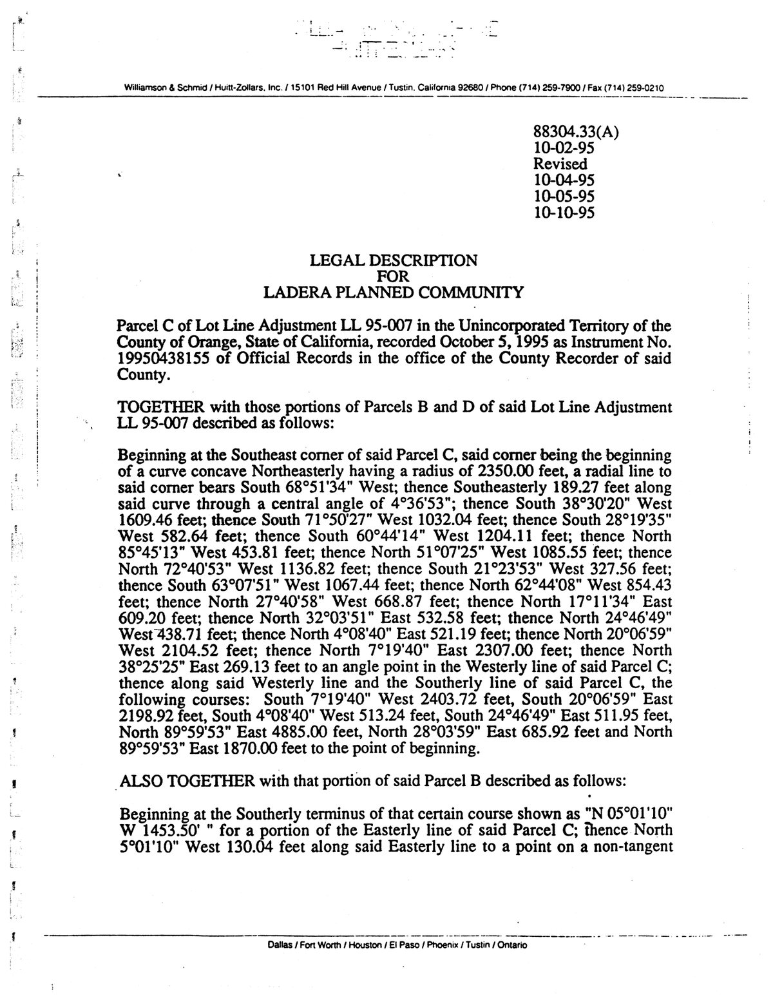
The governing constraint from this project's earlier environmental-review audit still applies: the historical land-use review in the obtained Phase I began at 1952. The 1907–1912 compulsory dipping era sits forty years outside that window. EIR 555 may prove silent for the same structural reason. That is a reason to read it, not a reason to skip it.
This is the strongest result of the sweep. It is not a keyword hit. It is a condition of approval that obliged someone to be watching the ground while it was opened.
"Prior to the approval of each Area/Subarea Plan or recordation of any final tract/parcel map (except for financing purposes), applicable County EMA Standard Conditions pertaining to archaeological and paleontological surveys, tests, reports, investigations, salvage, excavations and observance of grading activities in compliance with Board of Supervisors, Resolution 77-866 shall be placed on each Area/Subarea Plan or Tract/parcel map…"
Ladera Planned Community Program Text, General Regulations · recovered by OCR for this report
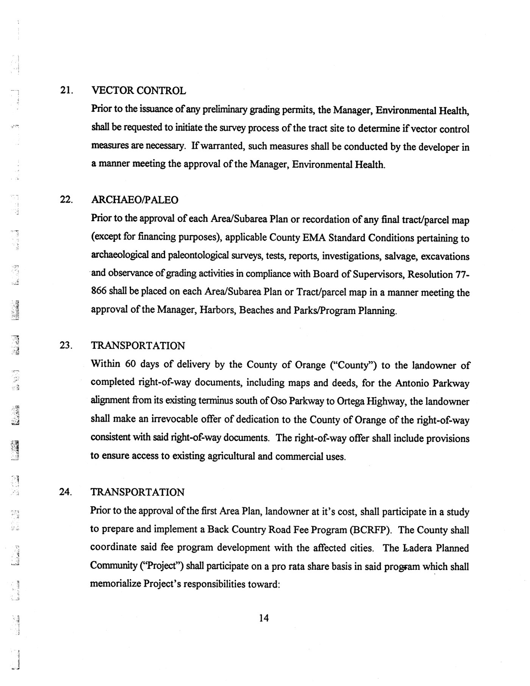
Orange County Board of Supervisors Resolutions 77-866 and 87-516 require that all County-permitted projects be monitored for archaeological and paleontological materials, and that finds be donated to the County of Orange "for the purpose of promoting scientific study and for display for the education and enjoyment of the people of Orange County."
Those donated materials form the County of Orange Paleontology and Archaeology Collections, now more than six million fossils and artifacts held in perpetuity by the County and curated at a dedicated facility.
The consequence. There are two independent trails, not one. A paper trail of monitoring and survey reports, which goes to the regional CHRIS office. And an object trail of anything collected, which goes to the County collection with an accession record naming the project it came from. A search of the collection by project name is a different question from a search of the literature, and it has not been asked.
Collections contact: copa@ocparks.com · 714-973-6655.
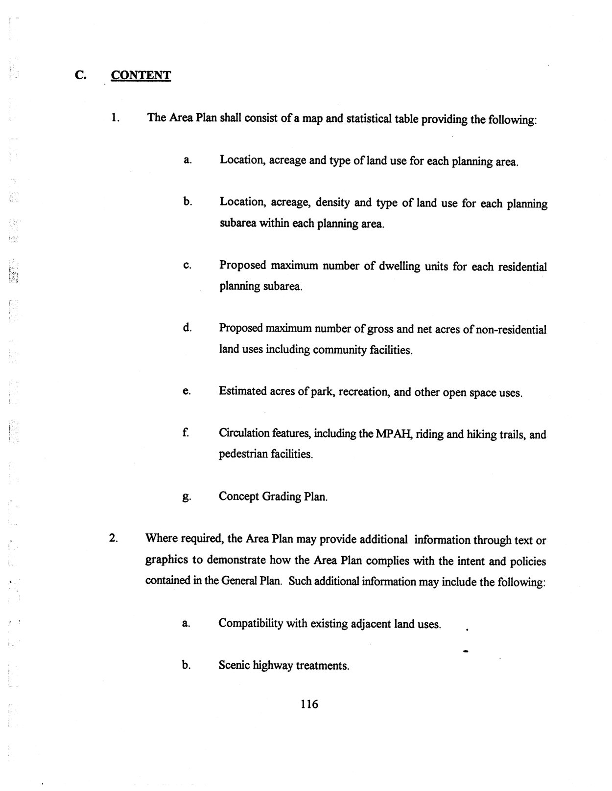
Archaeological monitoring in the 1990s was, in practice, oriented toward prehistoric deposits and fossils. A monitor trained to watch for lithics and bone, encountering a poured concrete slab of twentieth-century date, would frequently classify it as modern debris outside the scope of the condition and not record it. The condition guarantees that someone was present. It does not guarantee that a concrete feature was written down.
That is still a substantially stronger position than the project held yesterday: from "no record is known to exist" to "a specific, named, mandated report series exists, and it has not been read."
Ranked by the probability that a derelict concrete structure on Ladera ground is described in that archive, in any vocabulary.
| Archive | What it holds and why it ranks here | Access | |
|---|---|---|---|
| 1 | CHRIS · South Central Coastal Information Center CSU Fullerton, Dept. of Anthropology 657-278-5395 · sccic@fullerton.edu |
The California Historical Resources Information System regional office for Orange County. Holds every archaeological survey and monitoring report generated for CEQA compliance in the county, and every DPR 523 site record, including reports never published anywhere else. This is where the Resolution 77-866 reports of Part F would be filed. A records search returns all reports covering a parcel, whether or not anything was found.
Institutional note: SCCIC is housed in the same university department as the CSU Fullerton team that has offered soil sampling on this project. A coincidence of geography, not a shortcut, but a qualified academic requester is unusually close at hand. |
Restricted. Confidential under Gov. Code § 6254.10. Qualified consultants, academic researchers and landowners only. Fee-based. Not a public-records request. |
| 2 | OC Public Works · EIR 555 and its appendices certified 17 Oct 1995 · Addendum PA970174, 7 Apr 1998 |
The document of Part E. Request the certified EIR, the cultural resources technical report, the biological resources report, any Phase I Environmental Site Assessment, and the full text of Mitigation Measure 26 as separately named items, because appendices are filed and released separately from the certified volume. | Public. CPRA request. |
| 3 | OC Public Works · Area Plans and concept grading plans | The Program Text requires every Area Plan to include a Concept Grading Plan, and every site development permit submittal to show "topography, existing and proposed" and "location of significant vegetation and an indication of the resources to be altered." Rough grading plans carry existing-conditions and demolition exhibits. This is where the feature most likely appears as a labelled drawing rather than as prose — and a drawing has a station and an offset, which is a coordinate. | Public. CPRA request, by tract number and village. |
| 4 | County of Orange Paleontology and Archaeology Collections copa@ocparks.com · 714-973-6655 |
The object trail of Part F. More than six million items donated under Resolutions 77-866 and 87-516, with accession records naming the project each came from. An accession search by project name is a different question from a literature search, and it can confirm that monitoring occurred even if the report itself is hard to obtain. | Public institution. Research inquiry. |
| 5 | DWR · Well Completion Report archive | Drillers' logs by section, township and range. Relevant twice over: dipping stations were sited where water was, so the well record maps the candidate locations; and the obtained documents already note wells on ranch land without describing what stood beside them. | Public. Location precision reduced in the public tier. |
| 6 | Orange County Archives Old County Courthouse, Santa Ana |
Horticultural and Agricultural Commissioner records, Board of Supervisors minutes, and county photograph collections. The 1907–1912 quarantine was administered locally, so the inspection and compliance paperwork was generated locally. The only archive on this list that targets the original era rather than the development era. | Public. In person, by appointment. |
| 7 | Rancho Mission Viejo private archive | The landowner's own ranch records, aerial photography and construction photography. The most likely single source of photographs taken during grading, which is the specific thing sought. Not subject to public-records law; access is by relationship. | Private. By request only. |
| 8 | Continental Aerial Photo, Los Alamitos named in the Phase I itself |
The commercial archive where the consultants actually reviewed frames from 1952 to 1999 for this land, named fourteen times in the obtained Phase I. Whether the company still trades under that name should be checked, but the frame identifiers are printed in the report — for example 261-8-29-114(1) for 1959 — which is enough to order a specific frame from whoever now holds the library. | Commercial. Order by frame number. |
| 9 | UCSB Library aerial photography plus OC Survey historical imagery |
Not a written record, but the only source that can independently date a structure's appearance and disappearance. Frame-level coverage of Orange County runs back to the 1920s–30s. A concrete pad often reads from the air as a bright rectangle present before grading and absent after. | Public. Online index; scans on order. |
Appendix E — Site Photographs, for all nine Planning Areas. It is not an archive so much as a named exhibit that should sit in the County's own EIR 589 file, and very likely in the consultant's project file as well. Ask OC Public Works for the complete Appendix I including all plates, figures and appendices, and say plainly that the copy in circulation contains none of them.
Embedded metadata was read for every PDF in the evidence set. It carries no authorship and no geolocation, but it is not empty, and two things in it are worth recording.
Where metadata will matter is in material not yet obtained. Native grading-plan CAD files carry coordinates. Original field photographs carry capture dates and sometimes GPS. Both should be named explicitly in any request, because a request for "the report" returns a PDF, and a request for "the associated survey data and field photographs" may return something else entirely.
Six requests. Ordered so that each is cheap, independent, and does not wait on the answer to the one before it. Requests 1 and 2 can be filed the same day.
Name the document by number. Suggested wording:
"Final Environmental Impact Report No. 555 for the Ladera Planned Community, certified by the Board of Supervisors on 17 October 1995, together with Addendum PA970174 approved by the Planning Commission on 7 April 1998, and all technical appendices, specifically: (a) the cultural resources or archaeological technical report; (b) the biological resources technical report; (c) any Phase I Environmental Site Assessment or hazardous materials assessment prepared for the plan area; and (d) the complete text of Mitigation Measure 26, sub-measures A through Q."
Why this wording. A request for "the EIR" routinely returns the certified volume alone. The appendices are where field observation lives, and they are filed separately.
"Approved Area Plans and Subarea Plans for the Ladera Planned Community, including the Concept Grading Plan required for each; and rough grading plans with any existing-conditions or demolition exhibit identifying existing improvements to be removed, existing structures, or existing concrete to be demolished, for the tracts comprising Ladera Ranch."
Why this is the strongest public request on the list. It is cheap, it is unambiguously public, and the thing sought appears in it as a labelled drawing with survey coordinates rather than as a sentence somebody had to think to write.
"The complete Appendix I (Phase I Environmental Site Assessment) to EIR 589, including for each Planning Area report: Plate 1, Figures 1 through 3, and Appendices A through E — specifically Appendix E, Site Photographs. The copy in public circulation contains the report text only; none of the plates, figures or appendices are attached to it."
Why to say the last sentence. Naming the defect in the circulating copy is what stops the request being answered with the same incomplete file. This is the request that could put the consultant's own photographs of this land in front of you.
This cannot be filed as a public-records request and should not be attempted as one. It requires a qualified consultant, an academic researcher, or the landowner. The practical route is to ask whether a faculty member of the CSU Fullerton team already engaged on sampling will submit the records search, since SCCIC sits in their own department.
What to ask for: all previously recorded resources and all previously conducted survey and monitoring reports within the study area and a half-mile buffer, with explicit attention to reports produced under Orange County Board of Supervisors Resolution 77-866 for the Ladera Planned Community, and to historic-period ranching features of any description.
Handle the result carefully. CHRIS records are confidential by statute. Locational data from a records search must not be published, and this project's existing practice of staging coordinate disclosure applies with more force here, not less.
A research inquiry to copa@ocparks.com, asking whether the collection holds accession records for material donated from the Ladera Planned Community, and if so, what projects, what dates, and what monitoring firms are named. The accession record is the receipt for the monitoring, and it can establish that a monitor was on the ground even where the report is slow to surface.
Two relationship requests, not legal ones. From the landowner: photographs taken during grading and pre-construction survey of the Ladera villages, naming that original digital files or negatives are preferred over prints, because capture dates and any embedded location data are the point. From the County Archives: Horticultural and Agricultural Commissioner records, Board of Supervisors minutes and photograph collections for 1907–1912 — the only request on this list that targets the era itself.
| If a request returns… | Then |
|---|---|
| Any of the 22 correct names, anywhere on Ladera ground | The question stops being archival and becomes a sampling question immediately. |
| A demolition or existing-conditions exhibit labelling concrete of unstated purpose | A coordinate. The highest-value realistic outcome of this entire sweep. |
| A monitoring report noting a concrete feature of modern or unknown date | A recorded location, a date of recording, and a description written by someone who stood on it. |
| An accession record naming the Ladera project | Confirmation that monitoring occurred, plus the name of the firm that did it — which is itself a party who can be asked. |
| Appendix E, for any planning area | Dated photographs of ranch land taken by a professional who was looking at it carefully, even if not for this. |
| Nothing, across all six | A defensible, documented statement that the environmental record of Ladera Ranch is silent on this class of feature — a finding about the review, not about the ground, and worth stating in exactly those terms. |
REC) was discarded as an abbreviation false positive.| Figure | Source document | Grade | How it was obtained |
|---|---|---|---|
| 1, 2 | USDA Bureau of Animal Industry, Circular 207, Dips and Dipping Vats for Destroying Cattle Ticks, 1912 | A1 | Page render, pp. 14 and 19 of the printed circular |
| 3 | USDA BAI Circular 183, Directions for Constructing a Vat and Dipping Cattle to Destroy Ticks, 1911 | A1 | Page render |
| 4, 5, 9, 10, 11, 12, 13 | Ladera Planned Community Program Text, 17 Oct 1995, rev. 30 Jul 2003 | A2 | Page render at 200 dpi from a scan with no text layer. Figure 5 rotated 90° for legibility; no other alteration |
| 6 | EIR 589 Appendix I, Phase I ESA, Planning Area 1 | A2 | Page render of the table of contents |
| 7, 8 | Orange County Affordable Housing Implementation Plan Program EIR, 2016, Exhibits 1-1 and 4.8-1 | A2 | Page render |
All figures are unretouched page renders of documents in the project evidence set. None has been cropped to change what it shows, and none is a photograph of any location in Ladera Ranch. Two are federal engineering drawings; the rest are pages of public planning documents.
| Source | Grade | Use |
|---|---|---|
| Ladera Planned Community Program Text, 17 Oct 1995, rev. 30 Jul 2003 | A2 | Parts E and F. Names EIR 555; carries the ARCHAEO/PALEO condition and Resolution 77-866; requires a Concept Grading Plan per Area Plan; contains the zoning map and legal description. |
| Orange County Zoning Administrator summary minutes, PA 180010 (Ladera Ranch) | A2 | Independent confirmation of the EIR 555 certification date and Addendum PA970174. |
| OC Parks, County of Orange Paleontology and Archaeology Collections — history and collections pages | A2 | Part F. Resolutions 77-866 and 87-516, donation requirement, collection scale, contact. |
| EIR 589 Appendix I, Phase I ESA, Planning Areas 1–9, 2003 | A2 | Primary sweep corpus; Part D. |
| Oso Grande Phase I ESA and addendum, 2002–2003; DTSC correspondence, 2003 | A2 | Corpus. |
| Orange County Affordable Housing Implementation Plan Program EIR, SCH 2015051062, 2016 | A2 | Figures 7 and 8, regional setting and the Ladera / Ranch Plan distinction. |
| USDA Bureau of Animal Industry Circulars 174, 183 and 207, 1911–1912 | A1 | Construction specification behind the physical description the lexicon is written against; Figures 1 to 3. |
| CHRIS / SCCIC published access policy and contact, CSU Fullerton | A2 | Part G access pathway and confidentiality constraint. |
| California Government Code § 6254.10 | A1 | Statutory basis for CHRIS confidentiality. |
| Prior LEHRP environmental-review audit (1952 review-window finding) | Internal | Part E constraint. Derived from source A2 above, and independently confirmed in Part D by the "1952 to 1999" aerial review sentence. |
Companion files published alongside this report: LEXICON.md, the complete 159-term list formatted for reuse; sweep_results.json, every term with its hit count and location; and Ladera_PC_Program_Text_OCR.txt, the recovered text of the document that had none. Run the lexicon against each new document as it arrives, and check that the document has a text layer before trusting a zero result.
This report is part of an independent research and data-organization project. It does not provide medical advice and does not establish that any pesticide, property, organization, employer, school, water provider, government agency, or other party caused any illness. Publicly reported health events may not have been independently medically verified. Geographic and temporal overlap does not establish exposure or causation. Formal conclusions require authorized epidemiological analysis, verified medical information, exposure assessment, toxicological review, and independent scientific evaluation.